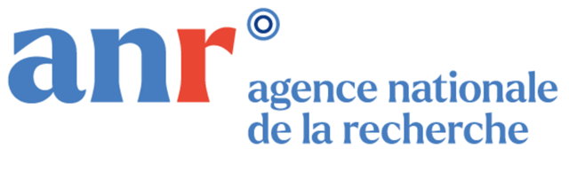
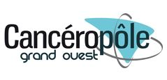
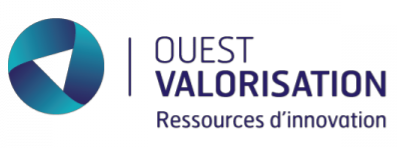
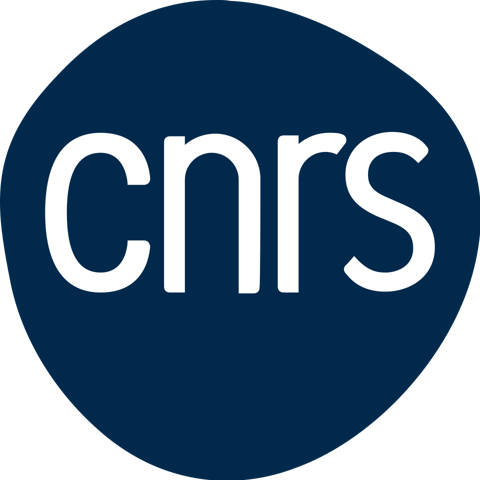
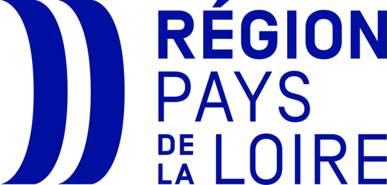
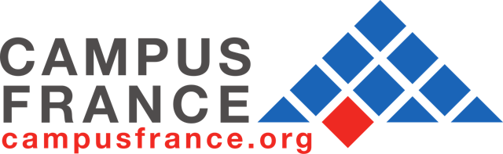

NanoBioMat / Projets
Projets de recherche
Informations institutionnelles et grandes orientations scientifiques des projets en cours et récents.
MAGNETIMA vise à développer des nanoassemblages magnétiques pour le traitement de l’hépatite auto-immune. Le projet étudie la libération de médicaments contrôlée magnétiquement et l’immunothérapie spécifique d’antigène, en associant le développement des matériaux à leur évaluation dans des modèles cellulaires humains et un modèle préclinique de la maladie.
Présentation du projet au CEISAM (nouvel onglet)
ANR — Agence nationale de la recherche

(nouvel onglet)2024–2027
SEMAPHORE
SEMAPHORE étudie des nanoassemblages magnétiques et photoactifs pour combiner des approches photodynamiques et photothermiques en recherche contre le cancer. Le projet associe des compétences en assemblage de nanoparticules, en chimie des photosensibilisateurs et en évaluation biologique afin d’étudier la complémentarité de ces approches activées par la lumière.
EUR LUMOMAT
 (nouvel onglet)
(nouvel onglet)2024–2025
NAMASTHEP étudie des nanoassemblages magnétiques multifonctionnels dans une approche préclinique du carcinome hépatocellulaire. Le projet combine des recherches en formulation et des études dans des modèles cellulaires hépatiques et un modèle tumoral préclinique afin d’évaluer les réponses biologiques et la contribution de l’hyperthermie magnétique.
Cancéropôle Grand Ouest · Emergence Inter-réseaux

(nouvel onglet)2023–2024
NanoCURQMAG réunit le CEISAM et le CR2TI pour étudier des nanoassemblages magnétiques à base de curcumine dans le contexte des maladies du foie. Le projet examine leur stabilité dans les environnements biologiques et leur biodistribution, avec des études précliniques ciblant l’hépatite auto-immune et le carcinome hépatocellulaire.
Ouest Valorisation · programme de prématuration

(nouvel onglet)2022–2023
NanoSuperSpin3D étudie comment les interactions entre nanoparticules magnétiques influencent le comportement collectif de nanoassemblages tridimensionnels. Le projet vise à relier l’organisation des particules à leur réponse magnétique et à leur échauffement sous champ magnétique alternatif, avec des applications potentielles en hyperthermie magnétique et en imagerie.
CNRS · EMERGENCE@INC2022

(nouvel onglet)2019–2023
SUPERFERATITE étudie des nanoassemblages magnétiques biodégradables dans le cadre des maladies auto-immunes du foie. Le projet relie la conception des nanoparticules et l’échauffement magnétique à l’étude des interactions biologiques et des réponses immunitaires, en associant chimie des matériaux et immunologie hépatique.
Région Pays de la Loire · Etoiles Montantes

(nouvel onglet)2021–2022 · 2023–2024 · 2025–2026
PHC Barrande / PHC Proteus
Collaborations internationales sur les nanovecteurs magnétiques et les nanoassemblages stabilisés par des polymères.
Campus France

(nouvel onglet)Vous recherchez des compétences complémentaires ?Découvrez le réseau de collaborations.